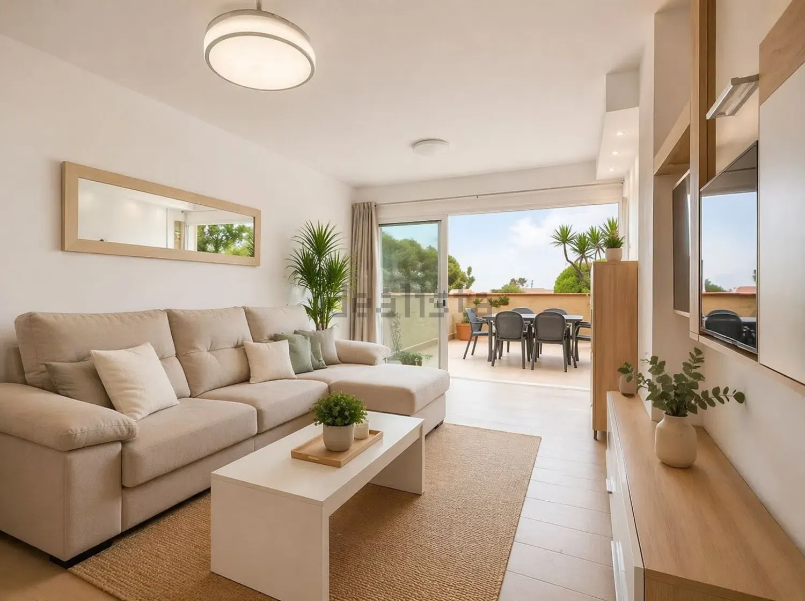
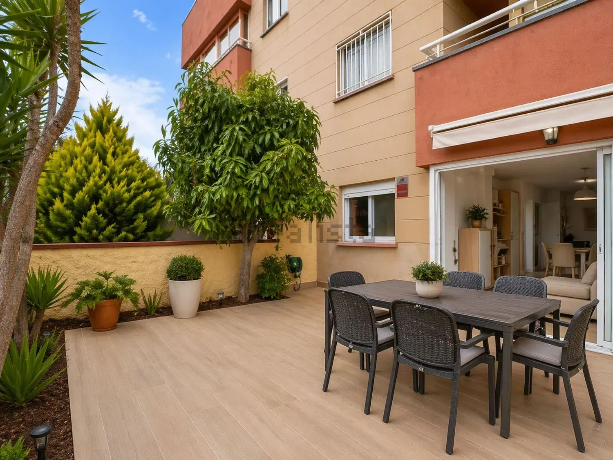
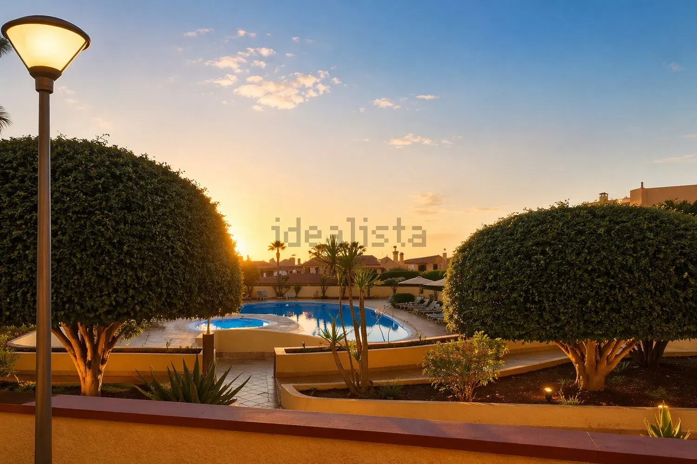

01 · Zu verkaufen
Renovierte 2-Zimmer-Wohnung mit 15 m² Terrasse und Poolblick – Costa Adeje, Teneriffa
395.000 €
88 m² bebaut2 Schlafzimmer1 BadRef. 111258127
Komplett renovierte Erdgeschosswohnung in der Wohnanlage La Pineda in Torviscas (Costa Adeje), im Süden Teneriffas.
- 88 m² bebaute Fläche / 74 m² Wohnfläche
- 2 Schlafzimmer, 1 Bad, große Küche und helles Wohn-Esszimmer
- 15 m² Terrasse mit Blick auf den Gemeinschaftspool und den Garten
- Aufzug, Klimaanlage, Einbauschränke, Westausrichtung
- Baujahr 1998, Wohnung vollständig renoviert
- Barrierearm: für Personen mit eingeschränkter Mobilität geeignet
- Hausgeld: 86 €/Monat · Energieausweis: in Bearbeitung
Ideal als Zweitwohnsitz oder zur Langzeitvermietung. Geschäfte, Restaurants und Busse sind zu Fuß erreichbar; der Strand von Torviscas/Fañabé liegt wenige Minuten entfernt. Costa Adeje gehört zu den gefragtesten Lagen im Süden der Insel.